Utvalgte åpen kildekode-prosjekter
uAMBIT
IEEE DCOSS-IoT 2026Byte-budsjettert oppdateringskomprimering med feilbakmelding for federert læring. Håndhever strenge opplastingsbudsjetter per runde for kommunikasjonseffektiv edge ML.
uambit-hard-cap-flLLM-basert stemmeintelligenssystem
UtvalgtModulær pipeline som bruker tale-til-tekst og LLM-er for å transformere rålyd til strukturerte semantiske innsikter og brukerintensjoner for autonome og intelligente systemer.
Vis på GitHubAMBIT: Adaptiv MAD-basert beskjæring
IEEE ICFEC 2024Effektiv komprimeringsteknikk for federert læring ved edge computing. Publisert ved IEEE International Conference on Fog and Edge Computing, 2024.
Les IEEE-artikkelKompetanse
Maskinlæring og KI
- Federert læring
- Distribuert maskinlæring
- Modellkomprimering og beskjæring
- Kommunikasjonseffektiv læring
- ML-eksperimentering og benchmarking
- Modellevaluering
- Edge-KI / Edge-beregning
- TensorFlow, Python, Jupyter/Colab
Programvareutvikling
- Systemdesign
- Programvarearkitektur
- Full SDLC
- Webapplikasjonsutvikling
- API-integrasjon
- Testing og kvalitetssikring
- DevOps
Sky, data og plattformer
- Skydatateknologi
- Microsoft Azure
- Databasestyring
- Datateknologi
- Datamodellering
- CRM (Dynamics 365)
Verktøy og leveranse
- Git og GitHub
- GitHub Copilot
- Jira og Confluence
- ServiceNow
- Smidige metoder
- Scrum og Kanban
Sikkerhet og etterlevelse
- Informasjonssikkerhetsstyring
- Programvare- og nettverkssikkerhet
- Trusselvurdering
- Sikkerhetsprotokoller
- GDPR-etterlevelse
Ledelse og samarbeid
- Ingeniørledelse
- IT-ledelse
- Prosjektplanlegging
- Teamutvikling
- Kommunikasjon med interessenter
- Forretningsanalyse
Akademiske publikasjoner
uAMBIT: Byte-Budgeted Update Compression with Error-Feedback for Federated Learning
Akseptert som full artikkel ved IEEE DCOSS-IoT 2026
Vis kode & preprintAMBIT: Efficient Pruning Technique for Edge Computing
Publisert i IEEE International Conference on Fog and Edge Computing (2024)
Les publikasjonAdaptive Mean Absolute Deviation Pruning in Federated Learning
Publisert i DUO, Universitetet i Oslo (2023)
Les publikasjonProsjekter
LLM-basert stemmeintelligenssystem
Selvstendig forskning
Modulær pipeline som bruker tale-til-tekst og LLM-er for å transformere rålyd til strukturerte semantiske innsikter og brukerintensjoner for autonome og intelligente systemer.
- Tale-til-tekst-transkripsjon med kontekstuell LLM-behandling
- Strukturert semantisk intensjonsuttrekking for autonom beslutningstaking
- Designet for edge-deployable og ressursbegrensede miljøer
uAMBIT: Byte-budsjettert federert komprimering
Selvstendig forskning / Universitetet i Oslo
Komprimeringsmetode for federert læring som håndhever et strengt uplink-budsjett på 0,5 KiB per klient per runde, med konkurransedyktig nøyaktighet vs. Top-k, STC, QSGD og EF-Sign. Akseptert ved IEEE DCOSS-IoT 2026.
- Terskelbasert sparsitet med skaldeling & feilbakmelding
- Benchmarking på BreastMNIST med TensorFlow; reproduserbare Colab-eksperimenter
- Komplett forsknings-notebook + modulær
src/-pakke
Femi-systemet for kvinners sikkerhet
Eget prosjekt
Utviklet Femi-plattformen for å fremme kvinners sikkerhet og samfunnsengasjement.
Digital transformasjon i DNB
Universitetet i Oslo
Forskningsprosjekt om DNBs digitale transformasjon, med fokus på teknologi og organisasjonsendringer.
Software Process Improvement (SPI)
DNB Bank
Utviklet en omfattende SPI-plan for bedre prosessoptimalisering og kvalitet.
Scrum-håndbok
DNB Bank
Forfattet en detaljert håndbok om Scrum-metodikk, med beste praksis og strategier for implementering.
Arbeidserfaring
Kombinert rolle som programvareingeniør og Scrum Master, med ansvar for smidig transformasjon og teamoptimalisering for å sikre prosjektsuksess.
- Agil implementering: Ledet innføringen av Scrum og Kanban for bedre sprintplanlegging, backlog-styring og prioritering.
- Kvalitetssikring: Utviklet detaljerte testsystemer med Octane og sikret vellykket integrasjon av Sbanken inn i DNB.
- Hendelseshåndtering: Forbedret IT-leveranser gjennom ServiceNow for feilretting og hendelsesoppfølging.
- Kommunikasjon: Holdt jevnlige oppdateringer til interessenter om prosjektfremdrift.
Grunnla og ledet Femi, et sosialt systemprosjekt for å styrke kvinners sikkerhet og samfunnsengasjement.
- Prosjektledelse: Ledet utviklingsteamet fra idé til lansering.
- Samarbeid: Koordinerte innsats med Barne-, ungdoms- og familiedirektoratet.
- Teknisk ledelse: Tok beslutninger rundt systemarkitektur og sikkerhet.
- Brukervekst: Implementerte strategier for økt bruk og engasjement.
Scrum Master med ansvar for å fasilitere teamprosesser og støtte utviklingsteamet i å levere i henhold til prosjektmål.
- Teamfasilitering: Ledet daglige stand-ups, sprintgjennomganger og retrospektiver.
- Backlog-styring: Effektivisert sprintplanlegging og prioritering.
- Tekniske bidrag: Bidro aktivt i utviklingen med Laravel og Onfido.
- Prosjektstyring: Sikret tett dialog med interessenter.
Utdanning
Flere grader ble påbegynt og fullført parallelt gjennom samtidige studieopplegg.
Master i digitalisering og ledelse
Universitetet i Sørøst-Norge (USN)
2024 – Nåværende
Studier på masternivå med fokus på digital transformasjon, ledelse og styring.
90 studiepoeng forventes fullført innen slutten av inneværende semester. Gjenstående krav: 30 studiepoengs masteroppgave.
PågårMaster i informatikk: Programmering og systemarkitektur
Universitetet i Oslo
Tildelt: desember 2023
Spesialisering i programvareteknikk, systemarkitektur, distribuerte systemer og anvendt maskinlæring.
FullførtBachelor i ingeniørfag: Programvareutvikling
OsloMet – Oslo Metropolitan University
Tildelt: mars 2026
Fokus på programvareutvikling, webapplikasjoner, kunstig intelligens, datasikkerhet, operativsystemer og programvareprosjekter.
FullførtBachelor i informatikk: Programmering og systemarkitektur
Universitetet i Oslo
Tildelt: juni 2025
Fokus på programmering, programvareutvikling, databaser, informasjonssikkerhet og datasystemer.
FullførtBachelor i informasjonsteknologi
OsloMet – Oslo Metropolitan University
Tildelt: juni 2021
Fokus på informasjonsteknologi, programmering, webutvikling, nettverk, databaser og anvendt KI.
FullførtStudier i informasjonsteknologi (ingeniør)
Universitetet i Kalamoon
2010 – 2012
Studerte programmering, algoritmedesign og matematikk. Graden ble ikke fullført.
Ikke fullførtArtikler
Bryte siloer i digital transformasjon: Min erfaring
Publisert på LinkedIn, 2025
En av de største utfordringene i digital transformasjon er ikke teknologi – men samhandling. Ambassadører bygger bro mellom strategi og utførelse, mens et sentralt kontor samler innsatsen og en compliance-enhet sikrer styring.
Les artikkelProsjektestimering med trepunktsestimering og Monte Carlo-simulering
Publisert på LinkedIn, 2024
Kombinasjonen av trepunktsestimering og Monte Carlo-simulering gir mer presise estimater for komplekse prosjekter og støtter bedre risikostyring.
Les artikkelForskning og erfaring med smidige metoder
Publisert på LinkedIn, 2024
Kartla Scrum, Kanban, XP, Lean Agile, Crystal og FDD – og foreslo effektive hybride modeller for å balansere struktur, kvalitet og kontinuerlig leveranse.
Les artikkelRoss et al.s fem byggesteiner i digital transformasjon
Publisert på LinkedIn, 2024
Fokuserte på kundedata, operasjonell ryggrad, digitale plattformer, ansvarsstrukturer og eksterne utviklerplattformer – med eksempler fra banksektoren.
Les artikkelSertifiseringer
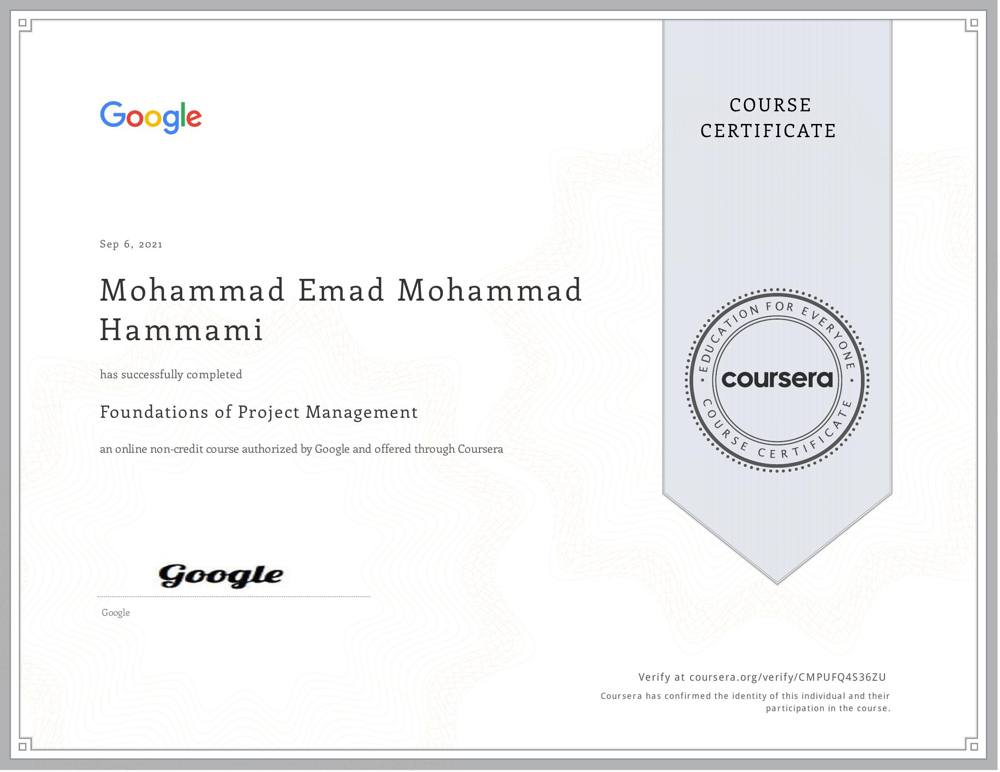
Smidig prosjektledelse
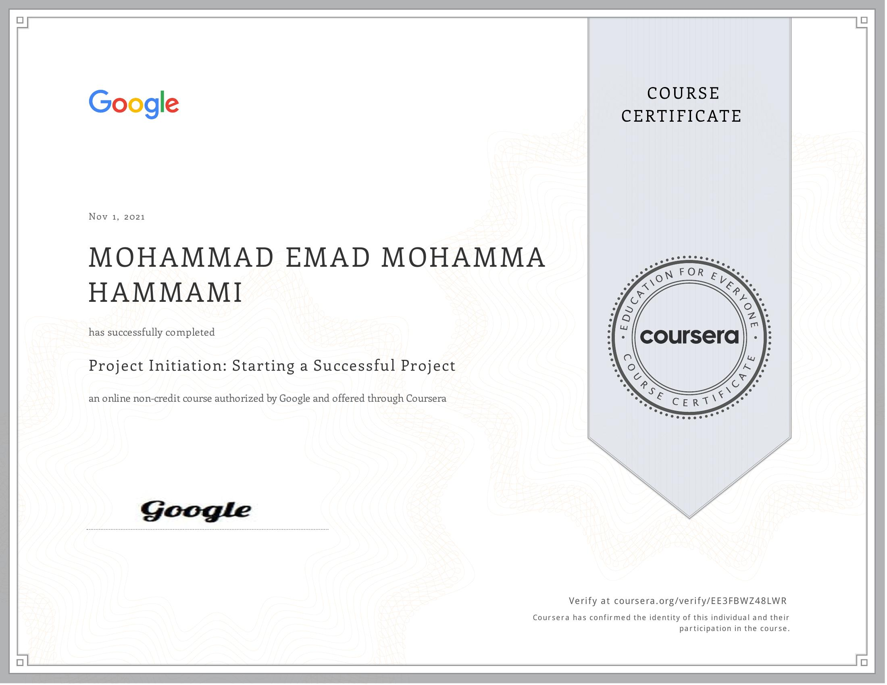
Grunnleggende prosjektledelse
Prosjektoppstart: Starte et vellykket prosjekt
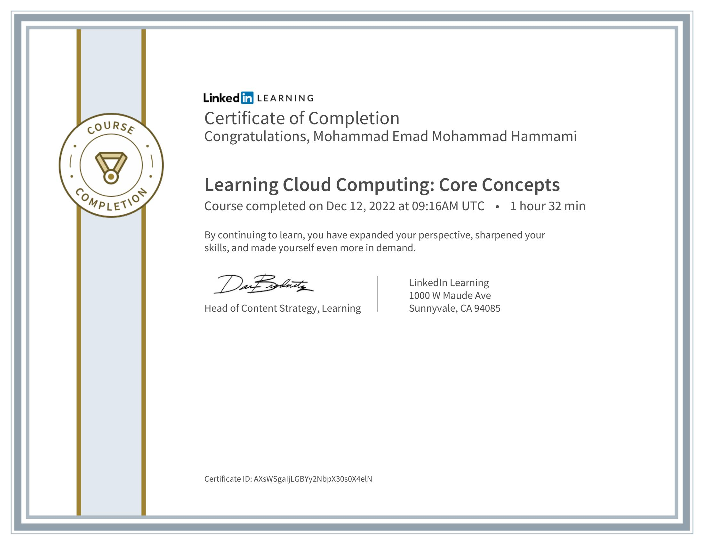
Prosjektledelse i praksis
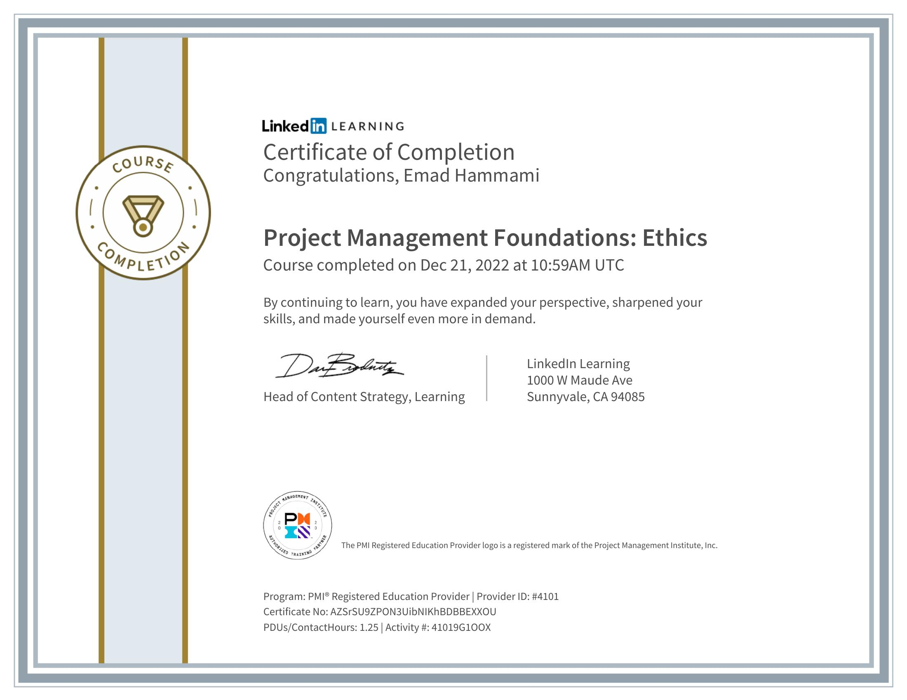
Prosjektplanlegging: Sette alt sammen
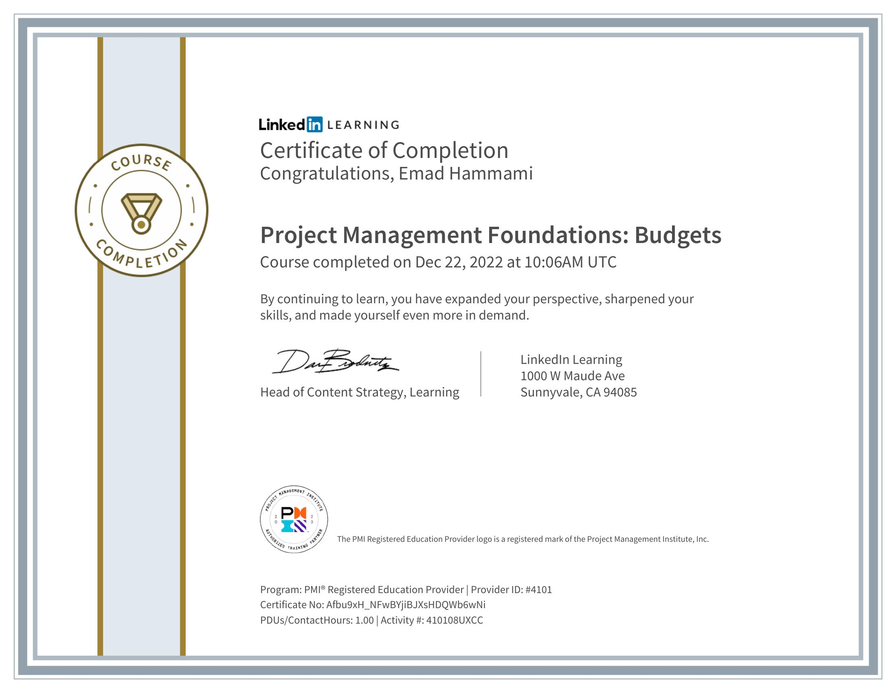
Profesjonell prosjektledelse
PMI og NASBA
Håndtering av prosjektinteressenter
PMI og NASBA
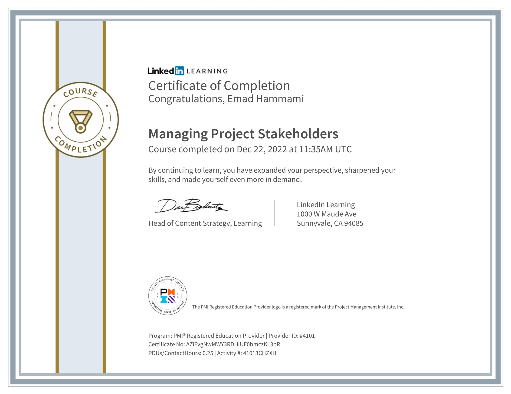
Samarbeid med Microsoft 365
PMI og NASBA
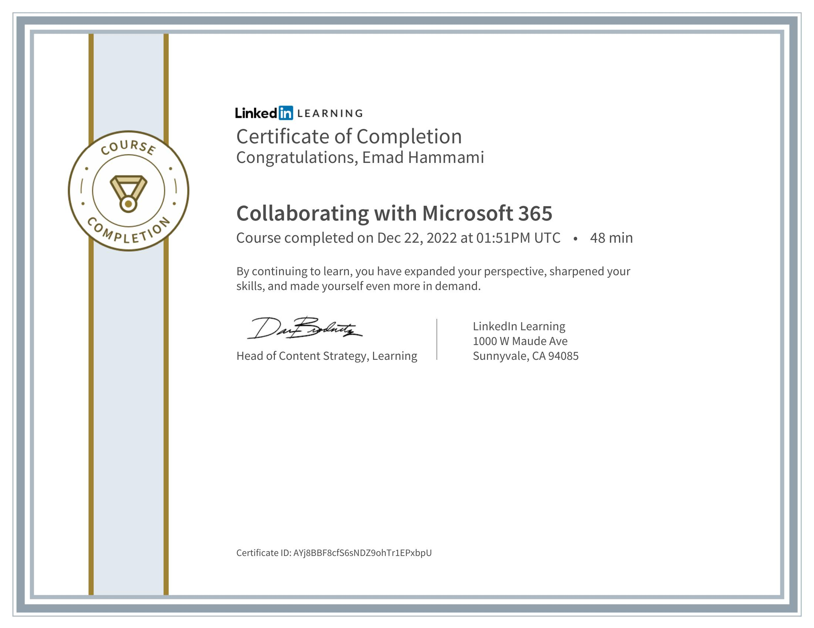
Prosjektledelse med Microsoft 365
PMI og NASBA
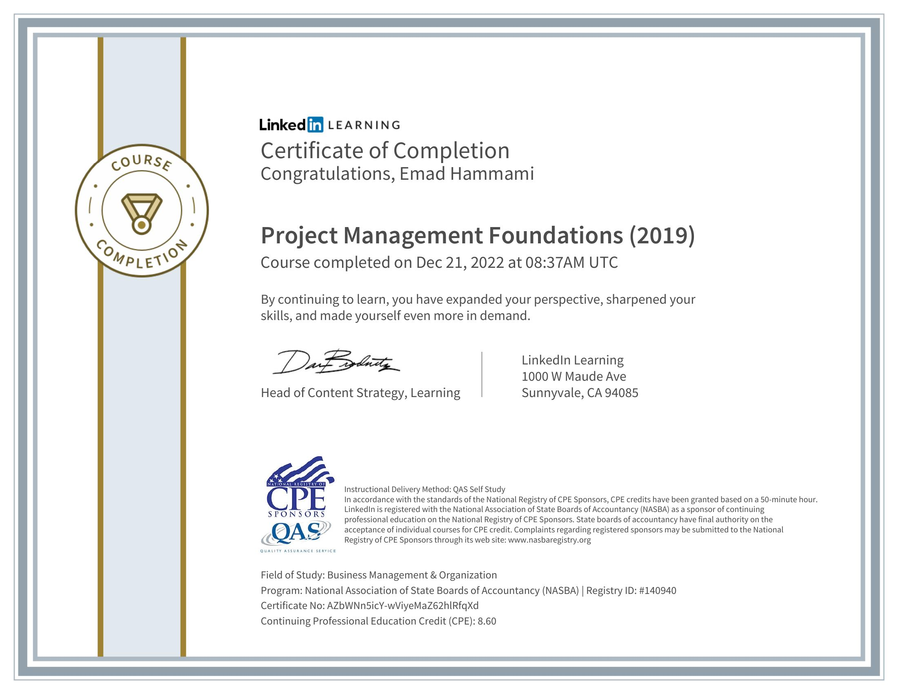
Optimalisere arbeid med Microsoft 365
PMI og NASBA
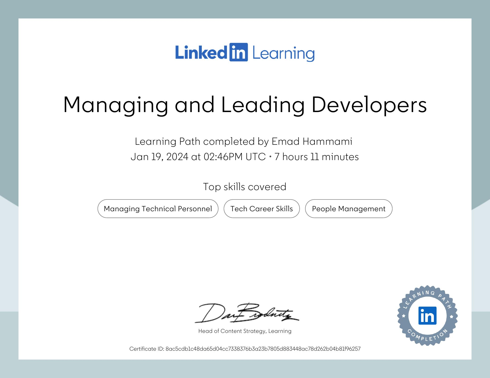
Lede og utvikle utviklere
People Management
Coachingferdigheter for ledere og managere
People Management
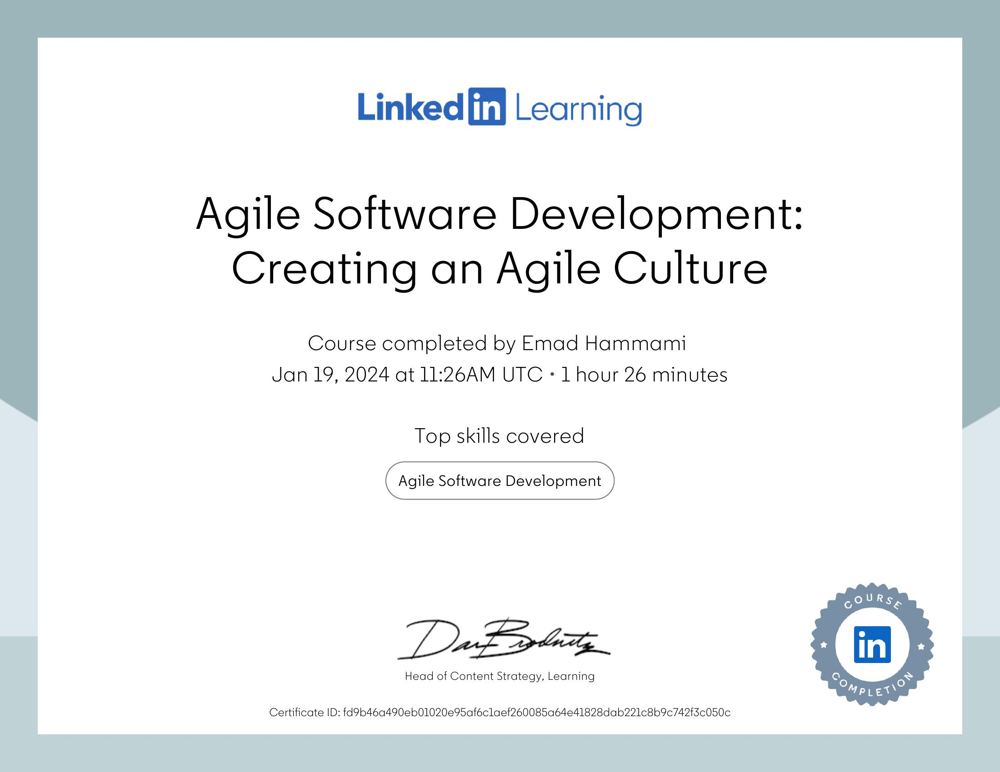
Effektiv teknisk kommunikasjon
People Management
Bygge tillit
People Management
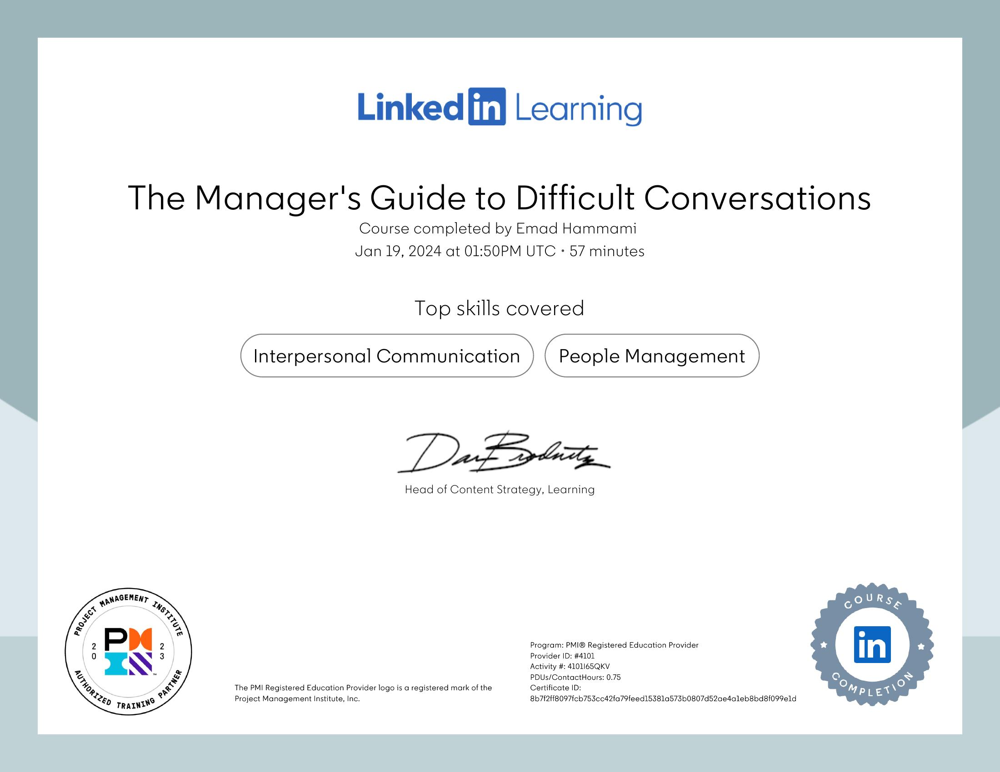
Vanskelige samtaler for ledere
People Management

Inkluderende teknologi: Menneskelig kodegjennomgang
People Management
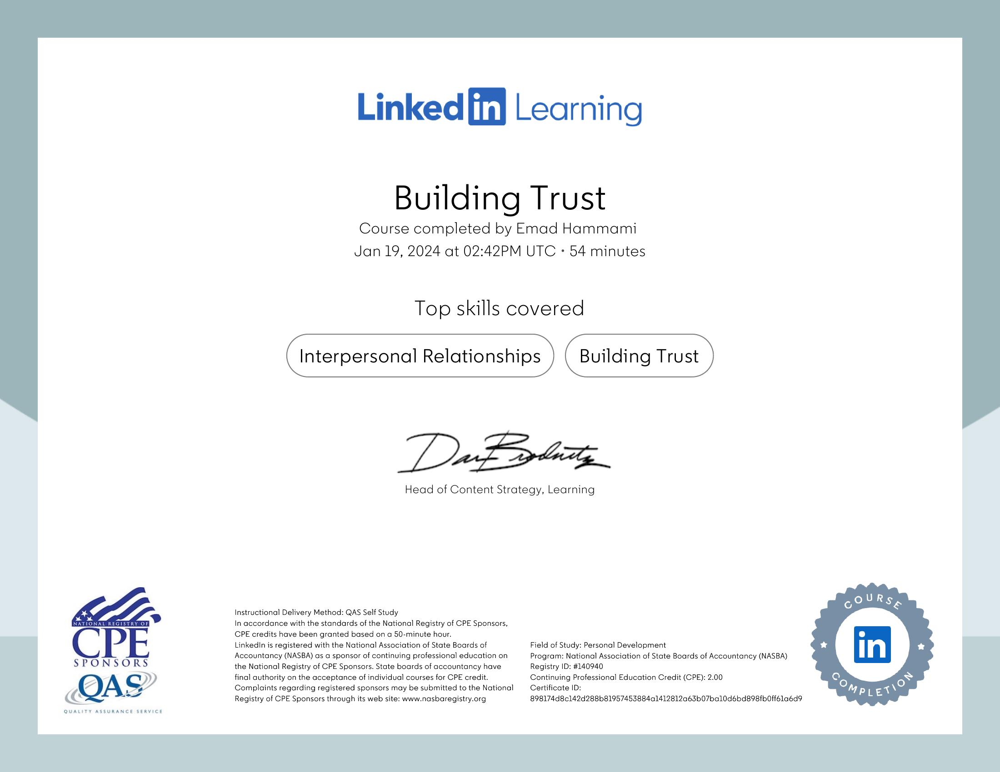
Smidig programvareutvikling: Skape en smidig kultur
People Management
Lykkes som førstegangs teknologileder
People Management
Fra utvikler til ingeniørleder
People Management
Frivillig arbeid
Bidro til Nobels Fredssenter med arrangementer og aktiviteter for å fremme fredsarbeid.
Ansvarlig for digitale ressurser, nettsideforbedring og kampanjer for global bevissthet.
Prioriterte saker for utsatte kvinner og barn, registrerte flyktninger og koordinerte bistand.